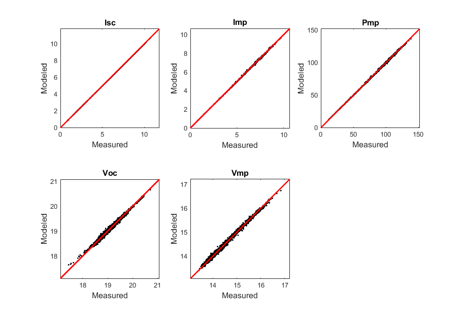

pvl_desoto_parameter_estimation
Estimates parameters for the De Soto module performance model
Contents
Syntax
- Model = pvl_desoto_parameter_estimation(IVCurves, Specs, Const, maxiter, eps1, graphic, n)
Description
pvl_desoto_parameter_estimation estimates parameters for the De Soto module performance model [1]. The estimation proceeds sequentially: the diode factor is estimated from Voc vs. irradiance, then is used to obtain four parameters (i.e., IL, Io, Rsh and Rs) for each IV curve. From the parameter values for each IV curve, model parameters (i.e., IL0, Io0, Eg0, Rsh0, and Rs) are estimated by regression. Estimation methods are documented in [2].
Inputs
- IVCurves - a structure array containing IV curve data in the following fields
- IVCurves(i).I - vector of current (A) (same length as V)
- IVCurves(i).V - vector of voltage (V) (same length as I)
- IVCurves(i).Ee - effective irradiance (W/m^2), i.e., POA broadband irradiance adjusted by solar spectrum modifier
- IVCurves(i).Tc - cell temperature (C)
- IVCurves(i).Isc - short-circut current of IV curve (A)
- IVCurves(i).Voc - open-curcut voltage of IV curve (V)
- IVCurves(i).Imp - current at max power point of IV curve (A)
- IVCurves(i).Vmp - voltage at max power point of IV curve (V)
- Specs - a structure containing module-level values
- Specs.Ns - number of cells in series
- Specs.aIsc - temperature coefficient of Isc (A/C)
- Specs.bVoc - temperature coefficient of Voc (A/C)
- Const - a structure containing physical and other constants
- Const.E0 - effective irradiance at STC, normally 1000 W/m2
- Const.T0 - cell temperature at STC, normally 25 C
- Const.k - 1.38066E-23 J/K (Boltzmann's constant)
- Const.q - 1.60218E-19 Coulomb (elementary charge)
Optional inputs
- maxiter - an integer setting the maximum number of iterations for the parameter updating part of the algorithm. Default value is 5
- eps1 - the desired tolerance for convergence for the IV curve fitting. The iterative parameter updating stops when absolute values of the relative change in mean, max and standard deviation of Imp, Vmp and Pmp between iterations are all less than eps1, or when the number of iterations exceeds maxiter. Default value of eps1 is 1e-3 (0.0001%).
- graphic - a boolean, if true then plots are produced during the parameter estimation process. Default is false
- n - a user-supplied value for the diode factor, imposed in place of the value estimated from Voc vs. effective irradiance.
Outputs
- Model - a structure containing the model parameters
- Model.n0 - diode factor
- Model.IL_ref - light current (A) at STC
- Model.Io_ref - dark current (A) at STC
- Model.Eg_ref - effective band gap (eV) at STC
- Model.Rsh_ref - shunt resistance (ohms) at STC
- Model.Rs_ref - series resistance (ohms) at STC
- Model.a_ref - modified diode (ideality) factor at STC, calculated as a_ref = n0*Ns*k/q*(T0+273.15)
- Model.Iph - vector of values of light current Iph estimated for each IV curve
- Model.Io - vector of values of dark current Io estimated for each IV curve
- Model.Rsh - vector of values of shunt resistance Rsh estimated for each IV curve
- Model.Rs - vector of values of series resistance Rs estimated for each IV curve
- Model.u - filter indicating IV curves with parameter values deemed reasonable by the private function filter_params
Example
% load IV curve data for a 36 cell Mitsubishi cSi module load 'Desoto_demo.mat' % Build structure for constants Const.E0 = 1000; % W/m2 Const.T0 = 25; % C Const.k = 1.38066E-23; % J/K Const.q = 1.60218E-19; % c % set control variables for parameter estimation maxiter = 20; eps1 = NaN; % use default graphic = false; n = NaN; % algorithm will estimate n from data % Estimate PVsyst model parameters. Structure Model contains the model % parameters along with array u (true for IV curves where valid parameter % sets were determined) and vectors Iph, Io, Rsh, Rs which contain % parameter values for each IV curve. [Model] = pvl_desoto_parameter_estimation(IVCurves, Specs, Const, maxiter, eps1, graphic, n); % Calculate 5 parameters for each IV curve using fitted model dEgdT = -0.0002677; % use default temperature coefficient for band gap Eg from [1] [IL, I0, Rs, Rsh, nNsVth] = pvl_calcparams_desoto([IVCurves.Ee],[IVCurves.Tc],Specs.aIsc,Model,Model.Eg_ref, dEgdT); % Compute IV curves corresponding to each set of 5 parameters Modeled = pvl_singlediode(IL, I0, Rs, Rsh, nNsVth); % Compute IV curve at STC [IL0, Io0, Rs0, Rsh0, nNsVth0] = pvl_calcparams_desoto(1000,25,Specs.aIsc,Model,Model.Eg_ref, dEgdT); % Compute IV curve points using 5 parameters. Structure STCModeled includes % fields Imp, Vmp, Isc, Voc, Pmp which will be modeled values at STC STCModeled = pvl_singlediode(IL0, Io0, Rs0, Rsh0, nNsVth0); FF0 = (STCModeled.Imp*STCModeled.Vmp)/(STCModeled.Isc*STCModeled.Voc); % Fill factor at STC % Calculate temperature coefficients for Vmp, Imp and Voc from simulated IV % curves at Ee = 1000. Create vector of cell temperatures for simulation to determine temperature % coefficients vTc = [15 25 35 45 55 65]'; % Compute sets of parameter values for simulation to determine temperature % coefficients [ILtc, Iotc, Rstc, Rshtc, nNsVthtc] = pvl_calcparams_desoto(1000,vTc,Specs.aIsc,Model,Model.Eg_ref, dEgdT); % Compute IV curves for simulation to determine temperature % coefficients Modeledtc = pvl_singlediode(ILtc, Iotc, Rstc, Rshtc, nNsVthtc); % extract IV curve points and estimate temperature coefficients by % regression col1 = ones(size(vTc)); [beta_Vmp]=[vTc-25 col1]\[Modeledtc.Vmp]; betaVmp = beta_Vmp(1); % temperature coefficient (V/C) for voltage at maximum power [alpha_Imp]=[vTc-25 col1]\[Modeledtc.Imp]; alphaImp = alpha_Imp(1); % temperature coefficient (W/C) for current at maximum power gammaPmp = alphaImp*STCModeled.Vmp+betaVmp*STCModeled.Imp; % temperature coefficient for maximum power % Compare calculated and measured IV curve points Data.Isc = [IVCurves.Isc]; Data.Imp = [IVCurves.Imp]; Data.Voc = [IVCurves.Voc]; Data.Vmp = [IVCurves.Vmp]; Data.E = [IVCurves.Ee]; Data.Isc = Data.Isc(:); Data.Imp = Data.Imp(:); Data.Voc = Data.Voc(:); Data.Vmp = Data.Vmp(:); Data.E = Data.E(:); % Plot comparison figure('Position',[50 50 50+9*96 50+6*96]) Meas = [Data.Isc, Data.Imp, Data.Imp.*Data.Vmp, Data.Voc, Data.Vmp]; Mod = [Modeled.Isc, Modeled.Imp, Modeled.Pmp, Modeled.Voc, Modeled.Vmp]; Title = {'Isc', 'Imp', 'Pmp', 'Voc', 'Vmp'}; for i = [1:5] subplot(2,3,i) scatter(Meas(:,i), Mod(:,i), 5, 'k', 'filled') hold on title(Title(i),'fontsize',12,'fontweight','b') xlabel('Measured','fontsize',12) ylabel('Modeled','fontsize',12) axis square datamin = min([Meas(:,i);Mod(:,i)]); datamax = max([Meas(:,i);Mod(:,i)]); datamin = max(datamin - (datamax-datamin)/10,0); datamax = datamax + (datamax-datamin)/10; plot([datamin, datamax], [datamin, datamax],'r', 'LineWidth',2) axis([datamin datamax datamin datamax]) box on end
Sources
[1] W. De Soto et al., "Improvement and validation of a model for photovoltaic array performance", Solar Energy, vol 80, pp. 78-88, 2006.
[2] C. Hansen, Parameter Estimation for Single Diode Models of Photovoltaic Modules, Sandia National Laboratories Report SAND2015-2065.
[3] C. Hansen, Estimation of Parameters for Single Diode Models using Measured IV Curves, Proc. of the 39th IEEE PVSC, June 2013.
See also
pvl_calcparams_desoto, pvl_singlediode
Copyright 2015 Sandia National Laboratories